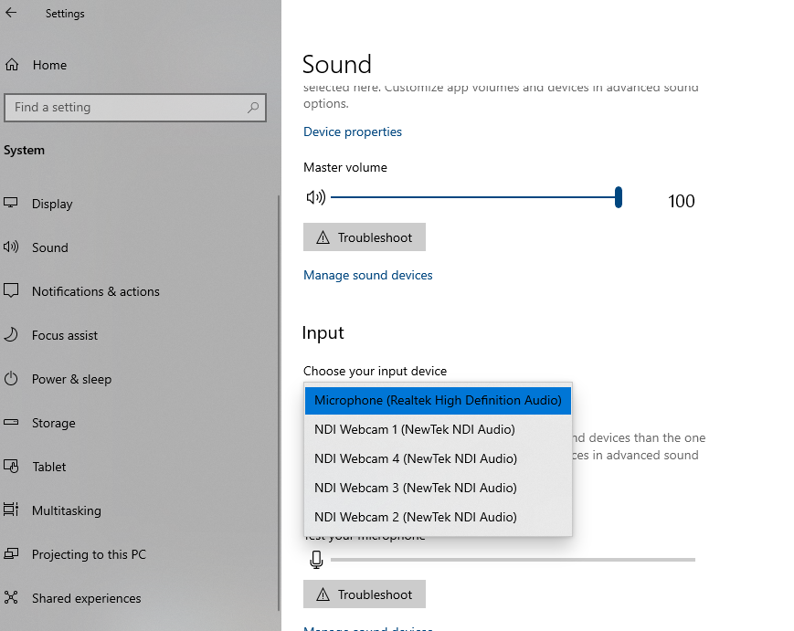
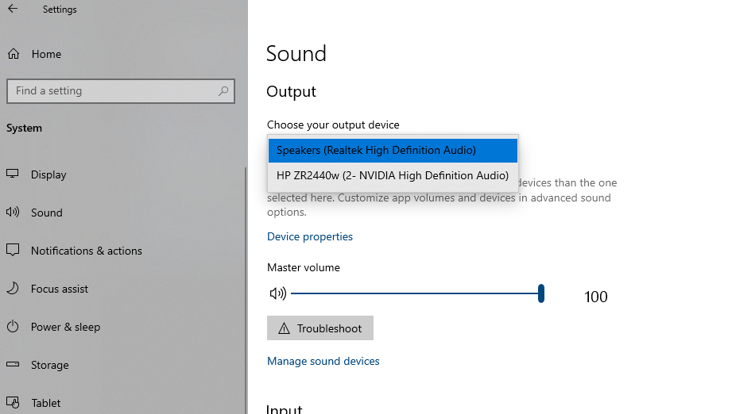
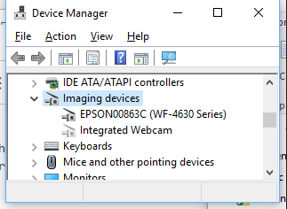

Configuración del Asistente Virtual
El asistente virtual como tal, no tiene parámetros de configuración. Sin embargo, se debe tener algunos elementos en cuenta para su correcto funcionamiento. Las instrucciones que siguen están descritas para el sistema operativo Windows, pero no difieren mucho para adaptarlas a otros sistemas operativos como Linux o MacOS.
Configuración del micfóno
El micrófono usado por el asistente, será el inicialmente configurado como predeterminado en el sistema operativo. Para cambiar el micrófono por defecto, debe ingresar a Preferencias del Sistema, Sistema, Sonido y en Input cambiar al dispositivo de entrada deseado:
Configuración de los parlantes
De la misma manera que con el micrófono, la salida de audio que usa el asistente virtual, es la configurada como predeterminada por el sistema. Para cambiar el micrófono por defecto, debe ingresar a Preferencias del Sistema, Sistema, Sonido y en Sonido cambiar al dispositivo de entrada deseado:
Configuración de la cámara
La cámara que será usada por el asistente virtual es la que el sistema tenga como primera en su lista de dispositivos de video. Para saber qué cámaras reconoce el sistema, vaya a Administrador de dispositivos y luego a Dispositivos de imágen. Ahí se listará las cámaras que el sistema esté reconociendo.
